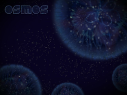
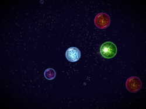

Osmos
Dieser Artikel wurde für die folgenden Ubuntu-Versionen getestet:
Ubuntu 14.04 Trusty Tahr
Zum Verständnis dieses Artikels sind folgende Seiten hilfreich:
 Osmos
Osmos  ist ein kommerzielles Physik-Spiel, das auf der Herstellerseite erworben werden kann. Das Spielprinzip ist simpel: Man spielt einen einzelligen Organismus. Durch Absorption von anderen Organismen wächst man - durch die Fortbewegung wird Masse ausgestoßen und man schrumpft.
ist ein kommerzielles Physik-Spiel, das auf der Herstellerseite erworben werden kann. Das Spielprinzip ist simpel: Man spielt einen einzelligen Organismus. Durch Absorption von anderen Organismen wächst man - durch die Fortbewegung wird Masse ausgestoßen und man schrumpft.
In den ersten Leveln wird man behutsam an das Spielprinzip herangeführt, das auf dem Rückstoßprinzip basiert. Jedes der insgesamt 47 Sentient-, Ambient- und Force-Level bietet einen stetig steigenden Schwierigkeitsgrad und eine andere Spielart. Abgerundet wird dieses minimalistische und zugleich ansprechende Spiel durch die Hintergrundmusik. Es ist auf 32- und 64-bit-Systemen spielbar.
|  |
| Startbildschirm |
|  |
| Spielszene |
Installation¶
Das Spiel über die Homepage erwerben, die Installationsdatei herunterladen und manuell installieren [1]. Das Spiel wird unter /opt/Osmos/ installiert.
Vorher kann man bei Bedarf eine Demoversion  des Spiels herunterladen und ebenfalls manuell installieren.
des Spiels herunterladen und ebenfalls manuell installieren.
Hinweis!
Fremdpakete können das System gefährden.
Desura¶
Das Spiel kann über die Internetseite oder den Client zur Spieleliste hinzugefügt und gestartet werden [2].
Verwendung¶
Bei Ubuntu-Varianten mit einem Anwendungsmenü findet man einen Programmstarter unter "Spiele -> Osmos". Nach dem ersten Start legt das Spiel im Homeverzeichnis den versteckten Ordner ~/.Osmos an. Hier findet man die Konfigurationsdatei Config.cfg sowie das Protokoll Osmos.log.
Mit dem Cursor (in Form eines Kreuzes) steuert man den Organismus. Zur Fortbewegung dient die linke Maustaste  .
.
| Tastenkürzel | |
| Taste(n) | Funktion |
| F10 | Bildschirmfoto aufnehmen. |
 /
↑ +
↓ /
↑ +
↓ | Zoom |
| Esc | Spieleinstellungen aufrufen. |
 | Verlangsamen |
|
Strg + | Beschleunigen |
|
Strg + /
← +
→ | Zeit |
| Alt + Z | Neues zufälliges Level generieren lassen. |
| B | Beenden |
Hinweis:
Bildschirmfotos werden unter ~/.Osmos/Screenshots, im Format .tga abgelegt.
Problembehebung¶
Kein Ton¶
Falls man im Spiel keinen Ton vorfindet, kann man diesen Fehler ganz leicht beheben. Klickt mit oben in der Leiste auf "Anwendungen" und wählt dort den Kontextmenüeintrag "Menü bearbeiten" auf. Danach navigiert man zum Spiel Osmos und klickt im Menüeditor auf "Eigenschaften". Der Befehlszeile zum Start von Osmos muss nur noch der Befehl "padsp" voranstellen. Das Fenster muss wieder geschlossen werden und man muss Osmos wie gewohnt starten. Der Ton sollte funktionieren (siehe auch PulseAudio).
Keine Schriftzeichen¶
Sind keine Texte im Spiel zu sehen (z.B. ESC zeigt nur einen farbigen Streifen und es erscheint kein Text), so kann man zunächst das Spiel mit ESC + b das Spiel beenden. Das Problem ist der Zeichensatz /opt/Osmos/Fonts/FortuneCity.ttf. Man kann diesen einfach ersetzen, z.B. mit DejaVu:
mv /opt/Osmos/Fonts/FortuneCity.ttf FortuneCity.ttf.backup cp /usr/share/fonts/truetype/ttf-dejavu/DejaVusSans.ttf /opt/Osmos/Fonts/FortuneCity.ttf
Danach Osmos wieder starten und - voila: Text ist da! Ansonsten weitere Zeichensätze ausprobieren.
Infobox¶
| Osmos | |
| Originaltitel: | Osmos |
| Genre: | Geschicklichkeit / Puzzle |
| Sprache: |     |
| Veröffentlichung: | 2009 |
| Publisher: | Hemisphere Games |
| Systemvoraussetzungen: | mind. 1 GHz / 512 MB RAM / 33 MB freier Festplattenspeicher / 3D Grafikkarte |
| Medien: | Download |
| Läuft mit: | nativ |
- Erstellt mit Inyoka
-
 2004 – 2017 ubuntuusers.de • Einige Rechte vorbehalten
2004 – 2017 ubuntuusers.de • Einige Rechte vorbehalten
Lizenz • Kontakt • Datenschutz • Impressum • Serverstatus -
Serverhousing gespendet von